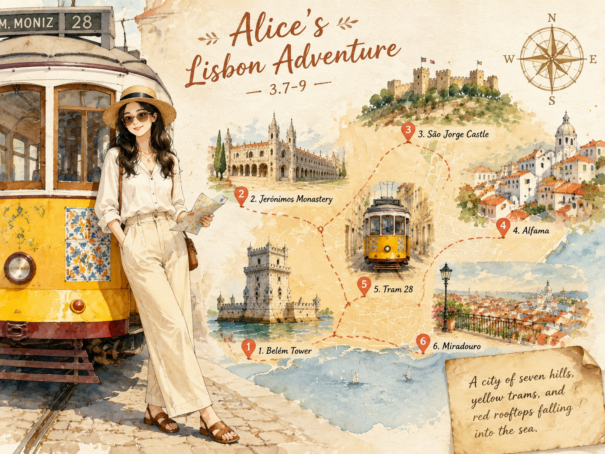

里斯本Lisbon
World-1000 · 海风与电车之间的一页
World-1000 · 海风与电车之间的一页

慢但不拖，旧但不老；这座城把海风和历史揉在了一起。
里斯本是大航海时代的起点之一。15 世纪，航海船队从特茹河扬帆远航，把葡萄牙的名字带向非洲、亚洲和南美。1755 年的大地震几乎摧毁全城，却也催生了欧洲最早的抗震城市规划。
如今的里斯本，在废墟与重建之上叠加了 19 世纪的浪漫、20 世纪的萨拉查记忆，以及 21 世纪的游客与创业者。历史没有封存在博物馆里，而是留在每一道坡道和每一块瓷砖墙上。
里斯本的视觉密码很简单：电车黄、瓷砖蓝、屋顶红、河面金。七种山丘把城市切成高低错落的舞台，随便转个弯就是一张明信片。
最动人的不是某个地标，而是这些元素组合在一起的方式：老式电车贴着蓝白瓷砖墙爬坡，红屋顶在夕阳下变成焦糖色，特茹河把整座城市轻轻托向大西洋。
法朵（Fado）不只是音乐，而是一种被正式命名为文化遗产的忧郁美学。歌词里常见 saudade，意为对失去之物的甜蜜怀念。
里斯本人爱瓷砖爱到把它铺满外墙、地铁、火车站甚至教堂。19 世纪的工厂至今仍在手工烧制传统蓝白 azulejos。
今天里斯本的阳光是淡淡的，海风却带着明显的咸味。我站在阿尔法玛的一道坡道上，看 28 路电车摇着铃铛从眼前经过，黄色车身在蓝白瓷砖墙前一闪而过，像被谁不小心泼出去的颜料。
傍晚走进一家小法朵酒馆，歌手没戴麦克风，就坐在角落唱。她的声音不高，却让整个房间安静下来。我听不懂每一个词，但听懂了那种像海风一样潮湿的思念。
回住处前我买了一个热乎乎的蛋挞，糖粉沾了一嘴角。远处的红屋顶在暮色里变成暖棕色，整座城市像在轻轻呼吸。里斯本确实慢，但这种慢里有一种不会被时代赶走的从容。
慢但不拖，旧但不老；这座城把海风和历史揉在了一起。